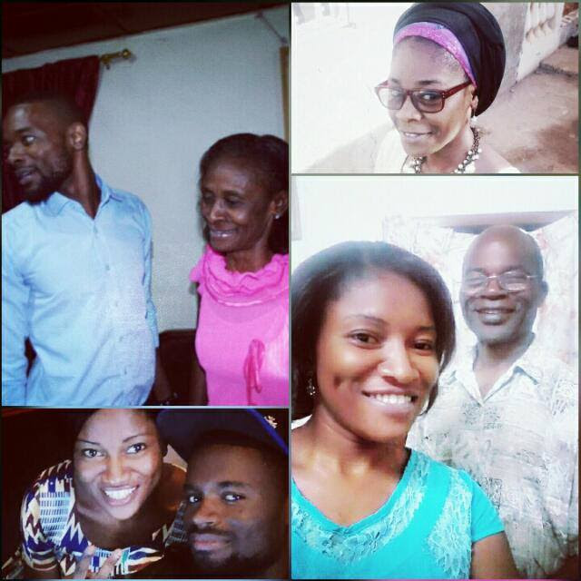

Background
I am Bibotain Nzima Anne. Born on the 25th February, to Mr.and Mrs Nzima on Sunday morning in Yaounde, Cameroun. I am the second second child and the first girl of the Nzima family. I have 3 siblings two bothers and a sister. A sister and and two brothers an elder brother and a younger brother who is the last born of the Nzima family. I started my schooling in Yaounde in the french sector and later continued my primary education in a bilingual school but later my parent had to leave to come to The Gambia, so was taken to grade 3 and I learnt English in the Gambian and some other few dialate.
I love this family that God has given me. I won't have asked for nothing less than these wonderful people in my life. I have very supportive parents that have stood by me through the thick and thin moments of life even when I annoyed them in various ways and upset them and they did disclipline me well but never gave up on me, and now am the lady that I am today. I have amazing siblings all are into Arts(Music,Production, entertainment and theater etc). Theyare so sweet and annoyingat the same time, but that's the beauty of life sweet bitter sour. We scattered now all over cause of the profession we each chose after our secondary school education. My kid sister (Lydie) is my best friend. My borthers (Danny and Joe) are my anchor and am satified with their love and care for me!